⏱ 開本流程總覽（共 4~4.5 小時）
📋 選角問卷（依玩家答 YES 的題目推算角色）
每個問題請玩家回答是否，根據最多「是」的題號區段推薦角色。
| 題號 | 問卷問題 | 對應角色 |
|---|---|---|
| 1–2 | 1. 你有沒有背地裡討論過別人？ 2. 你有沒有被外界的言語重傷過？ | 低語者 |
| 3–4 | 3. 別人對你許下承諾卻未實現？ 4. 你有沒有對別人許下承諾卻未實現？ | 筑夢師 |
| 5–6 | 5. 你有沒有帶著面具示人？ 6. 你是否戴著面具去維護某段關係？ | 偽面者 |
| 7–8 | 7. 你有沒有被別人利用過？ 8. 你有沒有為了自己利益而犧牲別人？ | 犧牲者 |
| 9–10 | 9. 你有沒有注意過一直在角落卻不被關注的人？ 10. 你有沒有感覺自己活在社會卻從不被關注？ | 匿行者 |
| 11–12 | 11. 你有沒有因某些人做壞事不被懲罰而憤怒？ 12. 你曾經犯下錯誤卻僥幸逃脫？ | 執刑者 |
| 13–14 | 13. 你有沒有傷過愛你的人？ 14. 你是否在感情中被人拋棄和傷害過？ | 獵心師 |
💡 選角重點：1、3、5、7、10、11、13 題答「是」的玩家代入感最強，優先安排第一本核心角色。
👥 角色卡牌（01–07）— 玩家名稱分配
🔍 線索發放控制
點擊代碼可複製並分享給對應玩家。點「解鎖」可讓玩家在玩家端輸入代碼查看線索內容。
🃏 開場·人物卡牌（12張發7張）
挑選7張發給玩家作為角色卡。其餘5張（審判者/迷途者/窺探者/魁儡師/造物者）為遊戲線索卡，於對應幕次發放。
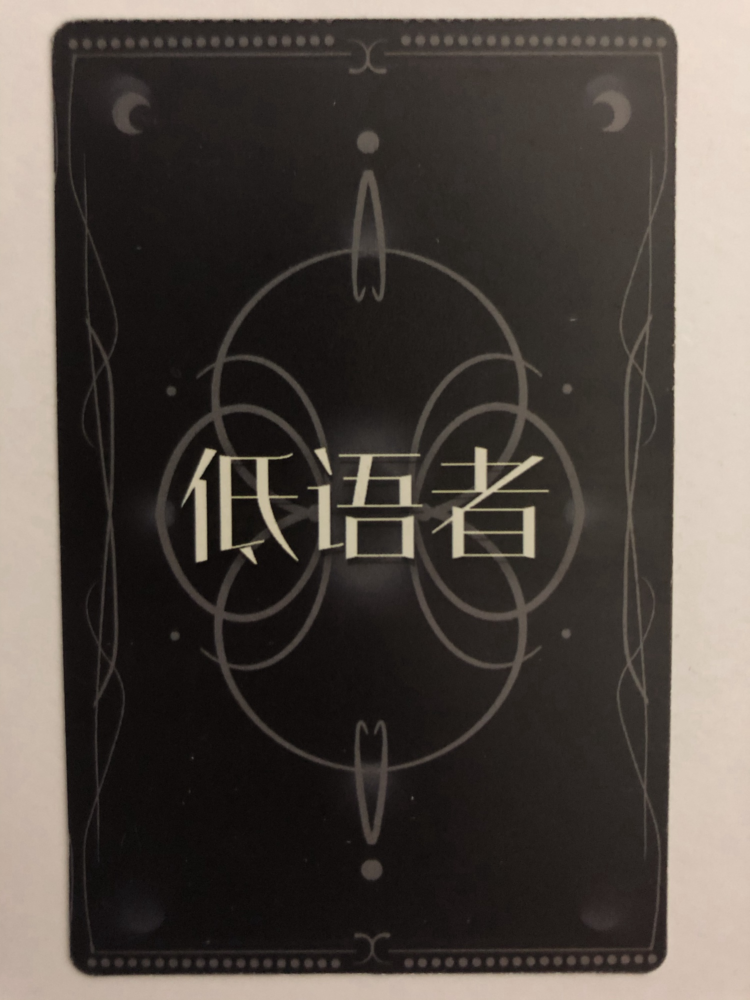
低語者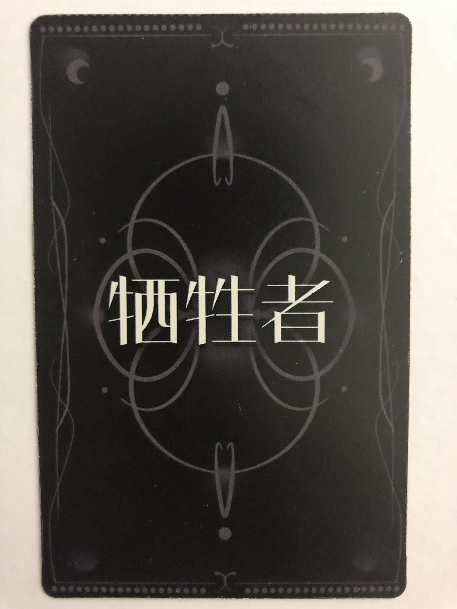
牺牲者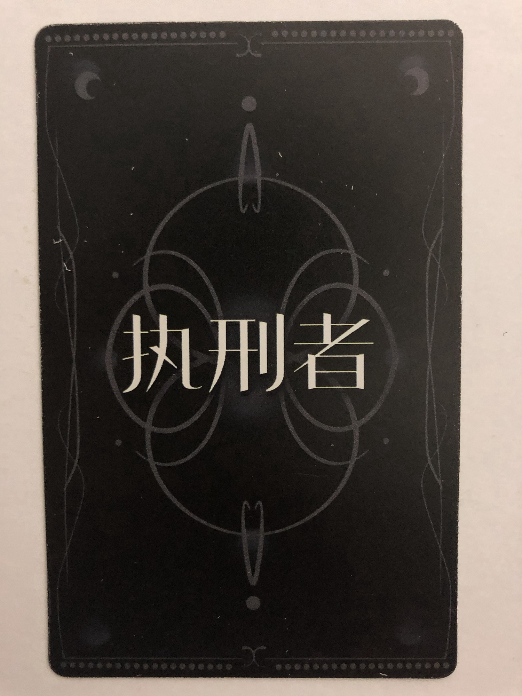
執刑者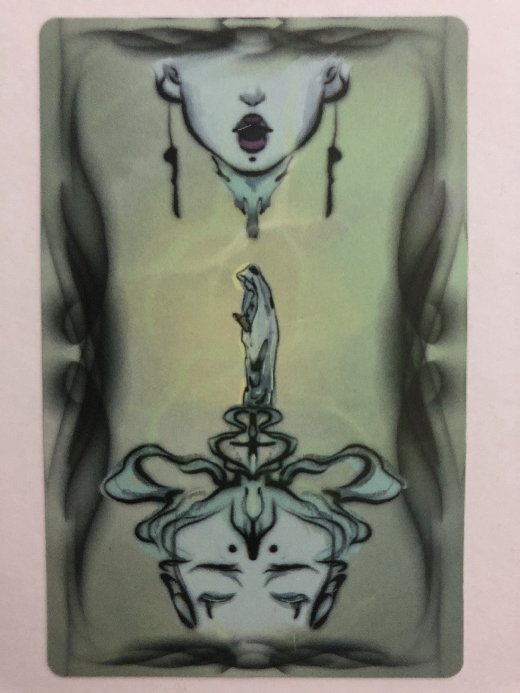
偽面者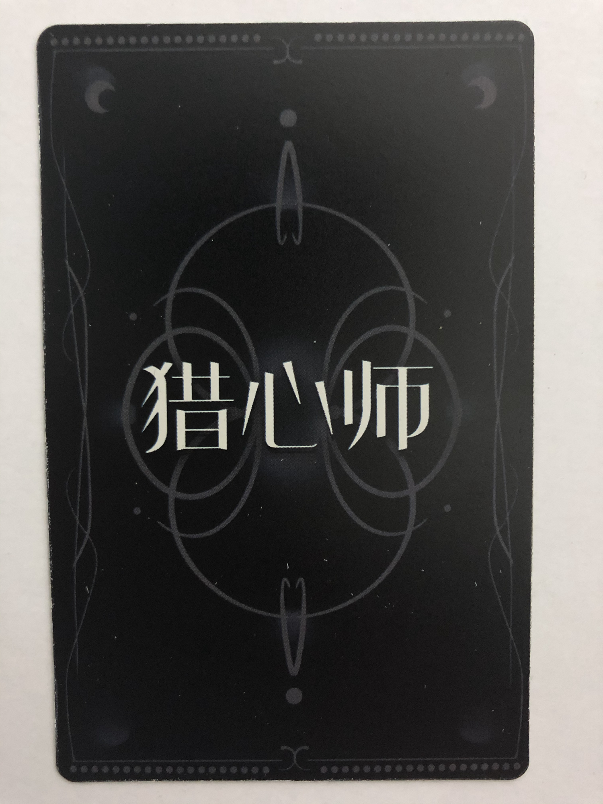
獵心師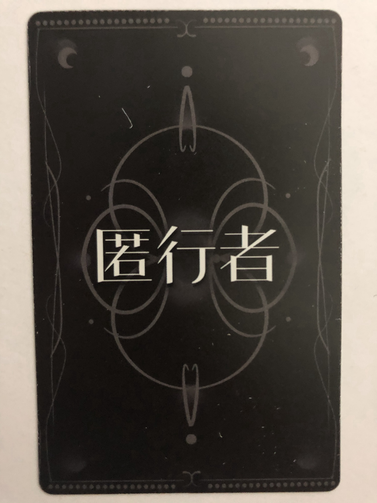
匿行者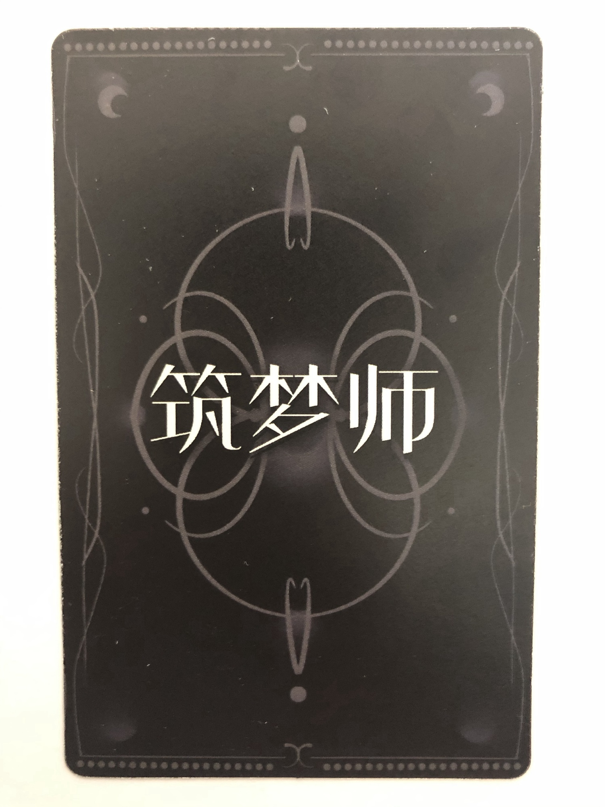
筑夢師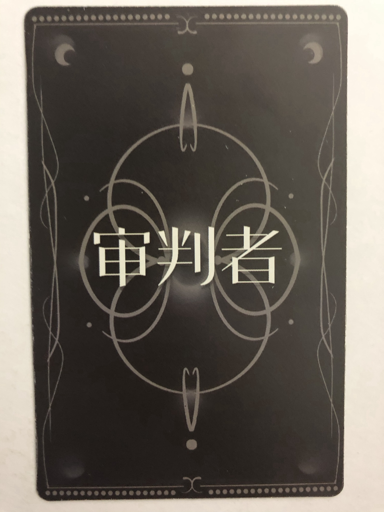
審判者★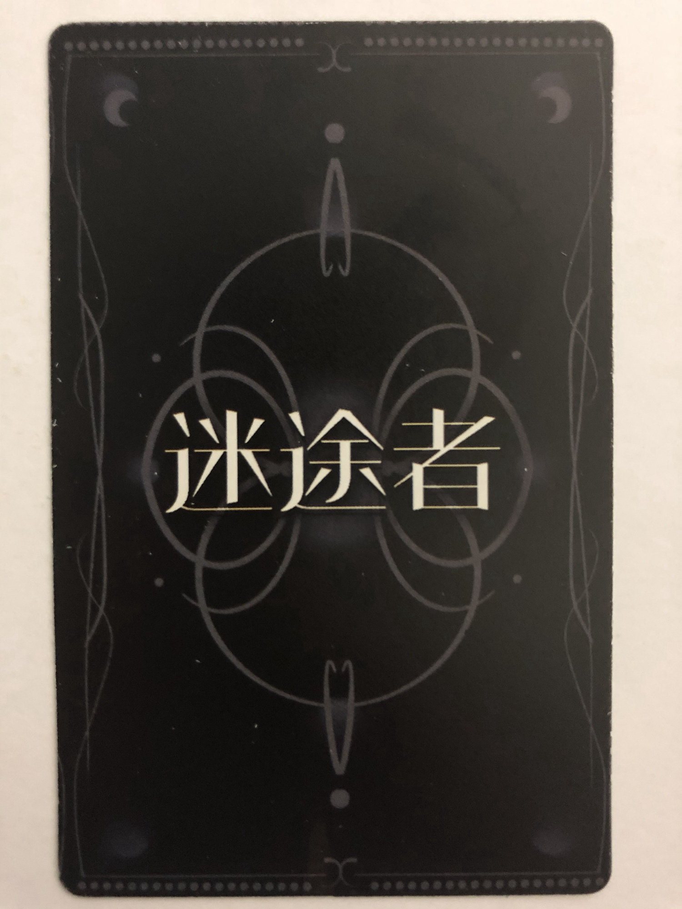
迷途者★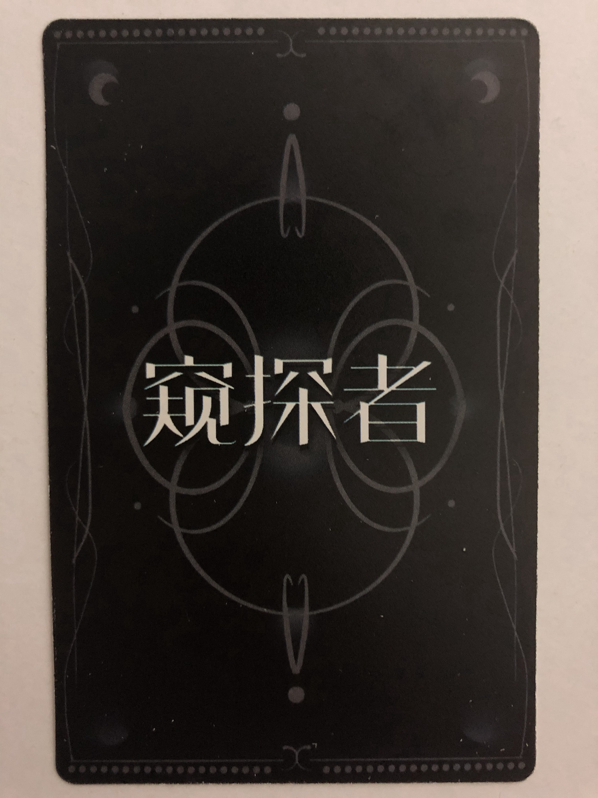
窺探者★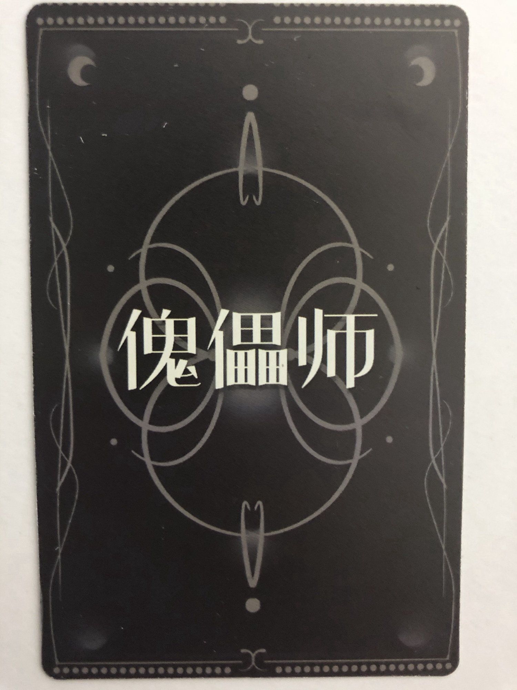
魁儡師★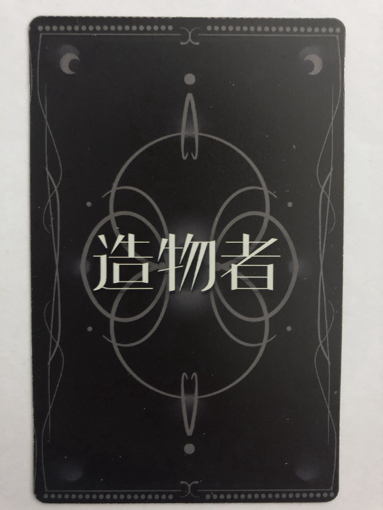
造物者★★ 為線索卡，不發給玩家作角色卡
📍 第一幕：邀請函 ＋ 審判者線索
| 線索名稱 | 代碼 | 類型 | 說明 | 狀態 |
|---|
📍 第二幕：別墅（迷途者案件）
| 線索名稱 | 代碼 | 類型 | 說明 | 狀態 |
|---|
📍 第三幕：門市（窺探者案件）
| 線索名稱 | 代碼 | 類型 | 說明 | 狀態 |
|---|
📍 第四幕：戲院（魁儡師案件）
| 線索名稱 | 代碼 | 類型 | 說明 | 狀態 |
|---|
📍 第五幕：沈先生家（A01–A07 ＋ 開放第二本）
| 線索名稱 | 代碼 | 類型／角色 | 說明 | 狀態 |
|---|
📕 第二本·第一幕（B系列）
| 線索名稱 | 代碼 | 類型 | 說明 | 狀態 |
|---|
📕 第二本·第二幕（C系列）
| 線索名稱 | 代碼 | 類型 | 說明 | 狀態 |
|---|
📕 第二本·第三幕（D系列·身份卡）
| 線索名稱 | 代碼 | 類型／角色 | 說明 | 狀態 |
|---|
📕 第二本·第四幕
| 線索名稱 | 代碼 | 類型 | 說明 | 狀態 |
|---|
📕 第二本·第五幕＋結局（E系列時間軸）
| 線索名稱 | 代碼 | 類型 | 說明 | 狀態 |
|---|
📢 廣播給所有玩家
⚡ 快速廣播模板
📅 案件時間軸
過去
審判者幼年被繼父（重度精神病人）囚禁在地下室，飽受折磨。在地下室讀到《昨日救贖》，作者筆名「雍九」。背景
2013
雍九寫下《昨日救贖 2》，思想轉變，意圖操控 12 位牌持有者進行「完美犯罪」。關鍵
2014.07.09
審判者（沈先生）啟動「完美犯罪」計劃。事件
2014.07.10
窺探者死亡。命案
2014.07.11
驅倡師死亡。命案
2014.07.12
迷途者死亡。命案
2014.07.18
繼父（執刑者牌持有者）在爆炸現場死亡。審判者在蒼語山陵園葬禮上收回 12 張牌，但雍九逃脫。轉折
2014.07.21
審判者（沈先生）邀集七人前往蒼語山陵園舉行葬禮儀式（本劇本殺的核心場景）。劇本起點
2018
沈先生在網路發表《昨日救贖：天才在左裁在右》招募文，引起關注後被刪除。事件
2019
沈先生出版網路小說《天才在左，我在右》，大火後將書籍資訊刪除。事件
2020
視頻博主「沈先生」發表卡牌講解視頻，制作懸疑劇《天才在左，我在右》，最終失敗下架。事件
2021
沈先生將故事寫成本劇本殺《天才在左，我在右》。現在
🔗 玩家端連結
將以下連結分享給玩家（建議每人手機掃描 QR Code 或直接開啟）。玩家需輸入線索代碼才能查看對應內容。
載入中...
📱 每個角色專屬連結